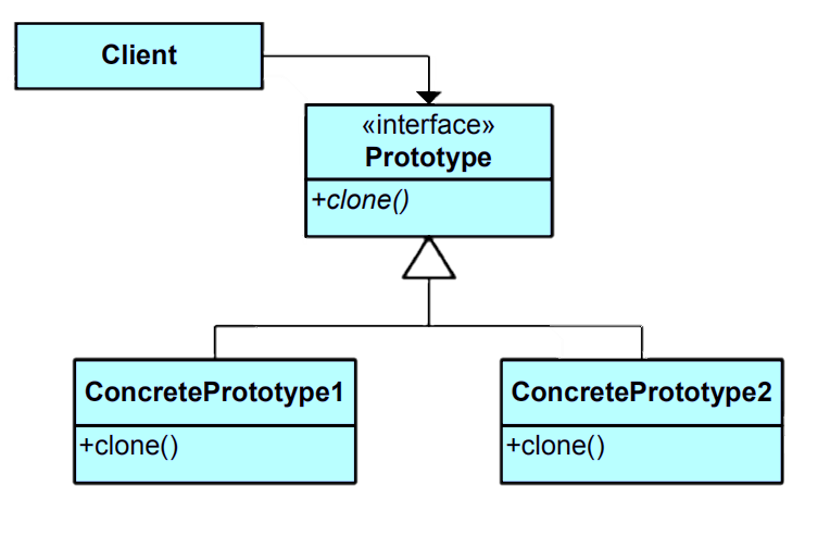

The Prototype pattern is a design pattern in software engineering that allows you to create new objects by copying existing objects, known as prototypes. It's used to create instances of classes with minimal effort and avoid the complexities of repeated object creation.Learn more.
Key Characteristics
Key characteristics of the Prototype pattern include:
Cloneable Objects: The Prototype pattern involves creating cloneable objects, which can be duplicated to create new instances.
Deep vs. Shallow Cloning:Depending on the complexity of the objects being cloned, you might need to implement deep or shallow cloning. Deep cloning creates a new copy of the entire object hierarchy, while shallow cloning copies only the top-level object, sharing references to nested objects.
Object Creation:Instead of using constructors or factory methods, the Prototype pattern uses a cloning mechanism to create new instances based on existing ones.
Runtime Flexibility:The pattern allows you to add or modify object structure at runtime by cloning and altering prototype instances.
Class Diagram

Example
Consider a scenario where you're developing a game and you want to create instances of characters with varying attributes. The Prototype pattern can be used to create different characters by cloning a prototype character and customizing the attributes.